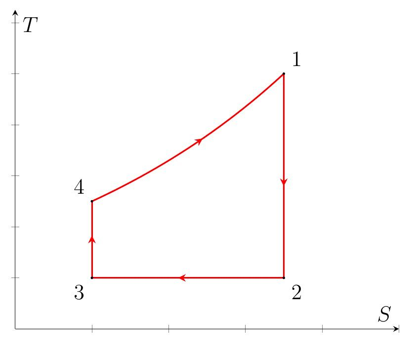
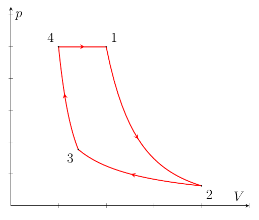
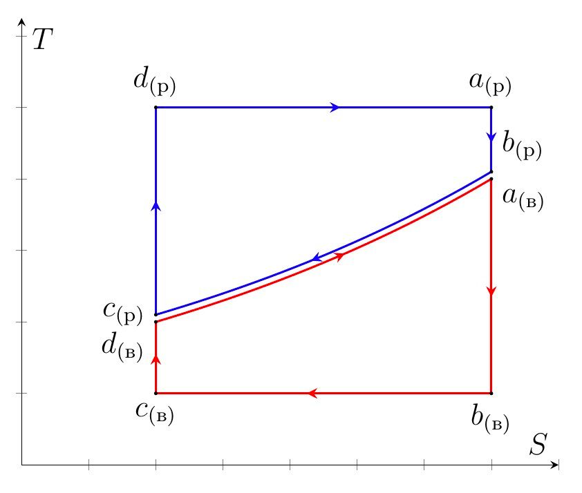
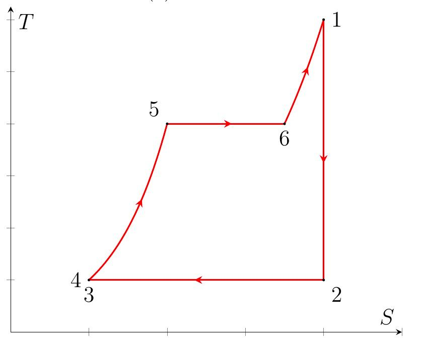
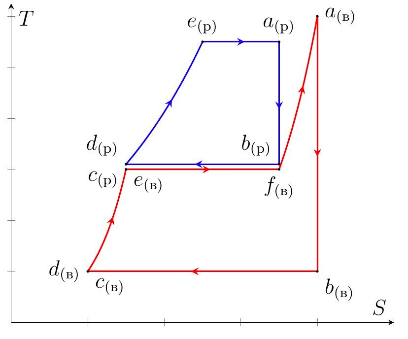

X23 (2023) — English translation
Solution in $TS$ coordinates.
The figure shows a qualitative diagram of the cycle under consideration in $TS$ coordinates.
Heat is removed from the gas in an isothermal process, so for $Q_-$ we get: $$Q_-=T_2(S_2-S_3) $$ where $S_2$ and $S_3$ - entropy gas in point $2$ and $3$ correspondingly. Since change entropy in адиабатических process equal zero: $$S_2-S_3=S_1-S_4=\int\limits_{T_4}^{T_1}\cfrac{\nu C_pdT}{T}=\cfrac{\gamma\nu R}{\gamma-1}\ln\cfrac{T_1}{T_4} $$ from where we find
Solution in $pV$ or $pT$ coordinates.
The diagram shows a qualitative graph of the process in coordinates $pV$.
We use the Mendeleev-Clapeyron equation: $$pV=\nu RT $$ Heat отводится from gas in isothermal process, in which $\delta{Q}=\delta{A}$, therefore: $$\delta{Q}=pdV=\cfrac{\nu RTdV}{V}\Rightarrow Q_-=\nu RT_2\int\limits_{V_3}^{V_2}\cfrac{dV}{V}=\nu RT_2\ln\cfrac{V_2}{V_3} $$ Since process $23$ isothermal – $V_2/V_3=p_3/p _2$. Rewrite expression for $Q_-$: $$Q_-=\nu RT\ln\cfrac{p_3}{p_2} $$ For ideal gas in квазистатическом адиабатическом process correct equation Пуассона: $$p\sim{T^{\gamma/(\gamma-1)}} $$ therefore: $$\begin{cases} \cfrac{p_1}{p_2}=\left(\cfrac{T_1}{T_2}\right)^{\gamma/(\gamma-1)}\\ \cfrac{p_4}{p_3}=\left(\cfrac{T_4}{T_3}\right)^{\gamma/(\gamma-1)} \end{cases} \implies{\cfrac{p_3}{p_2}=\left(\cfrac{T_1}{T_4}\right)^{\gamma/(\gamma-1)}} $$ Since $T_3=T_2$ and $p_4=p_1$. Finally:


Let us write the adiabatic equation for the process $1-2$ in coordinates $pT$: $$p^{1-\gamma}T^\gamma=const\Rightarrow{\cfrac{T_1}{T_2}=\left(\cfrac{p_1}{p_2}\right)^{\frac{\gamma-1}{\gamma}}} $$ Since $p_1=p_4$ $$\cfrac{T_1}{T_2}=\beta^{\frac{\gamma-1}{\gamma}} $$ Also, since $T_2=T_4/\alpha$:
Since $Q_+=C_p(T_1-T_4)$, we have: $$\eta_1=1-\cfrac{C_pT_2\ln(T_1/T_4)}{C_p(T_1-T_4)} $$ whence
For $\alpha$ and $\beta$ we have: $$\alpha=\cfrac{20}{17}\qquad \beta=4 $$ from where:
Solution in $TS$ coordinates.
The figure shows qualitative diagrams of the considered cycles in $TS$ coordinates.
Since the amounts of heat received and given up by water and mercury vapor, respectively, in isobaric polytropic processes are the same at the same temperature changes, the heat capacities in isobaric processes are also the same: $$C_{p\text{(in)}}=\cfrac{m_\text{(in)}\gamma_\text{(in)}R}{\mu_\text{(in)}(\gamma_\text{(in)}-1)}=\cfrac{m_\text{(р)}\gamma_\text{(р)}R}{\mu_\text{(р)}(\gamma_\text{(р)}-1)}=C_{p\text{(р)}} $$ from where:

The required pressures are equal to the pressures of saturated vapors at temperatures $t_4$ for mercury and $t_2$ for water. From the graphs we find:
Note: in all paragraphs below it is assumed that $T_i=t_i+T_0$, where $T_0=273~\text{K}$. The change in entropy in isothermal and isobaric processes is the same, therefore: $$\Delta{S}=\int\limits_{T_4}^{T_3}\cfrac{C_pdT}{T}=C_p\ln\cfrac{T_3}{T_4} $$ Amount heat, obtain mercury in isothermal process, equal: $$Q_{+\text{(р)}}=T_1\Delta{S} $$ Amount heat, отданное water паром in isothermal process, equal: $$Q_{-\text{(in)}}=T_2\Delta{S} $$ in изобарном process water pair obtain and/but mercury отдаёт heat $Q_p$, equal: $$Q_p=C_p(T_3-T_4) $$ therefore answer for $\eta_\text{(р)}$ and $\eta_\text{(in)}$ are as follows:
The change in entropy in isothermal and isobaric processes is the same, therefore: $$\Delta{S}=\int\limits_{T_4}^{T_3}\cfrac{C_pdT}{T}=C_p\ln\cfrac{T_3}{T_4} $$ Amount heat, obtain mercury in isothermal process, equal: $$Q_{+\text{(р)}}=T_1\Delta{S} $$ Amount heat, отданное water паром in isothermal process, equal: $$Q_{-\text{(in)}}=T_2\Delta{S} $$ in изобарном process water pair obtain and/but mercury отдаёт heat $Q_p$, equal: $$Q_p=C_p(T_3-T_4) $$ therefore answer for $\eta_\text{(р)}$ and $\eta_\text{(in)}$ the following:
Solution in $TS$ coordinates.
Since in an isobaric process gases exchange heat with each other, heat is supplied from the outside to the system participating in the binary cycle only in the mercury isothermal process. Then the efficiency of the binary cycle is the same as that of the Carnot cycle, consisting of two isotherms and two adiabats with temperatures $T_1$ and $T_2$: $$\eta_\text{Карно}=1-\cfrac{T_\text{х}}{T_\text{н}} $$ Finally:
Since the process $23$ is isothermal, and the change in temperature in section $34$ can be neglected by condition, the temperatures $t_2$, $t_3$ and $t_4$ are equal to the temperature of saturated steam at pressure $p_3=16~\text{kPa}$, i.e.:
The system temperatures at points $5$ and $6$ correspond to the temperature of saturated steam at pressure $p_4=2{,}8~\text{MPa}$, i.e.:
The figure shows a qualitative diagram of the cycle under consideration in $TS$ coordinates.
In section $4-5$ the liquid heats up, in section $5-6$ it evaporates, and section $6-1$ corresponds to the overheating of water vapor. Then for $Q_+$ we have: $$Q_+=cm(t_5-t_4)+L(t_5)m+\cfrac{\gamma_\text{(in)}mR(t_1-t_6)}{\mu_{\text{(in)}}(\gamma_\text{(in)}-1)} $$ Since $t_6>180^{\circ}\mathrm{C}$ - exponent/index adiabat water pair equal $9/7$. Substituting numerical values, we find:

The amount of heat given off per cycle in an isothermal process is equal to: $$Q_-=T_2(S_2-S_3) $$ Find change entropy other method, account for, that process $1-2$ and $3-4$ be adiabatic: $$S_2-S_3=S_5-S_4+S_6-S_5+S_1-S_6=m\left(c\ln\cfrac{T_5}{T_4}+\cfrac{L(t_5)}{T_5}+\cfrac{\gamma_\text{(in)}R}{\mu_\text{(in)}(\gamma_\text{(in)}-1)}\ln\cfrac{T_1}{T_6}\right) $$ Thus: $$Q_-=mT_2\left(c\ln\cfrac{T_5}{T_4}+\cfrac{L(t_5)}{T_5}+\cfrac{\gamma_\text{(in)}R}{\mu_\text{(in)}(\gamma_\text{(in)}-1)}\ln\cfrac{T_1}{T_6}\right) $$ Substituting the numerical values, we find:
Let's use the law of conservation of energy: $$A=Q_+-Q_- $$ from where:
By definition: $$\eta_2=\cfrac{A}{Q_+}=1-\cfrac{Q_-}{Q_+} $$ from:
The temperatures at points $b_{(\text{in})}$, $c_{(\text{in})}$ and $d_{(\text{in})}$ are the same and equal to the temperature of saturated water vapor at pressure $p_{c(\text{in})}$:
The temperatures at points $e_{(\text{in})}$ and $f_{(\text{in})}$ are the same and equal to the temperature of saturated water vapor at pressure $p_{e(\text{in})}$:
The figure shows qualitative diagrams of the considered cycles in $TS$ coordinates.
Since the processes $a_\text{in}-b_\text{in}$ and $c_\text{in}-d_\text{in}$ are adiabatic, the change in entropy in sections $d_\text{in}-e_\text{in}-f_\text{in}-a_\text{in}$ is equal to the change in entropy in section $c_\text{in}-b_\text{in}$: $$S_{b\text{(in)}}-S_{c\text{(in)}}=S_{e\text{(in)}}-S_{d\text{(in)}}+S_{f\text{(in)}}-S_{e\text{(in)}}+S_{a\text{(in)}}-S_{f\text{(in)}} $$ For change entropy water on section $d_\text{in}-e_\text{in}-f_\text{in}-a_\text{in}$ have: $$S_{a\text{(in)}}-S_{d\text{(in)}}=m_\text{in}\left(c_\text{in}\ln\cfrac{T_2}{T_1}+\cfrac{L_\text{in}(T_2)}{T_2}+\cfrac{\gamma_\text{in}R}{\mu_\text{in}(\gamma_\text{in}-1)}\ln\cfrac{T_{a\text{(in)}}}{T_2}\right) $$ For change entropy on section $c_\text{in}-b_\text{in}$ have: $$S_{b\text{(in)}}-S_{c\text{(in)}}=\cfrac{m_\text{in}L_\text{in}(T_1)}{T_1}+\cfrac{A_\text{pair}}{T_1} $⟦11 ⟧A_\text{par}$ - работа водяного пара при расширении. Найдём её: $$A_\text{pair}=\int\limits_{V_0}^{V_\text{to}}pdV=\nu RT\int\limits_{V_0}^{V_\text{to}}\cfrac{dV}{V}=\nu RT\ln\cfrac{V_\text{to}}{V_0} $$ Поскольку пар расширяется по изотерме: $$\cfrac{V_\text{to}}{V_0}=\cfrac{p_0}{p_\text{to}}=\cfrac{p_{c\text{(in)}}}{p_{b\text{(in)}}} $$ Мы получили уравнение, содержащее $T_a$: $$\cfrac{L_\text{in}(T_1)}{T_1}+\cfrac{R}{\mu_\text{in}}\ln\cfrac{p_{c\text{(in)}}}{p_{b\text{(in)}}}=c_\text{in}\ln\cfrac{T_2}{T_1}+\cfrac{L_\text{in}(T_2)}{T_2}+\cfrac{\gamma_\text{in}R}{\mu_\text{in}(\gamma_\text{in}-1)}\ln\cfrac{T_{a\text{(in)}}}{T_2} $⟦ 19⟧L_\text{in}(T_1)$ and $L_\text{in}(T_2)$: $$L_\text{in}(T_1)=2{,}27~\text{MJ}\qquad L_\text{in}(T_2)=1{,}98~\text{MJ} $$ Finally we get:

Let us denote the temperature at point $e_\text{р}$ as $T_4$. Then for the change in entropy in section $d_\text{р}-e_\text{р}-a_\text{р}$ we have: $$S_{a\text{(р)}}-S_{d\text{(р)}}=m_\text{р}\left(c_\text{р}\ln\cfrac{T_4}{T_2}+\cfrac{L_\text{р}(T_4)}{T_4}\right) $$ On the other hand, this same change entropy equal change entropy on section $c_\text{р}-b_\text{р}$, which, in its own очередь, equal change entropy water on section $e_\text{in}-f_\text{in}$: $$S_{f\text{(in)}}-S_{f\text{(in)}}=\cfrac{m_\text{in}L_\text{in}(T_2)}{T_2} $$ Equate, obtain dependence $L_\text {р}(T_4)$: $$L_\text{р}(T_4)=\cfrac{m_\text{in}L_\text{in}(T_2)T_4}{m_\text{р}T_2}-c_\text{р}T_4\ln\cfrac{T_2}{T_4} $$ Construct given function on boundary dependence $L_\text{р}(t)$ and find solution: $$t_4\approx 610^{\circ}\mathrm{C} $$ Immediately determinable $L_\text{р}(t_4)$: $$L_\text{р}(t_4)\approx 288~\text{kJ}/\text{kg} $$ The pressure of mercury in the desired area is equal to the pressure of saturated vapor of mercury at a given temperature. Finally we have:
Mercury in section $b_\text{р}-c_\text{р}$ exchanges heat with water in section $e_\text{in}-f_\text{in}$, so heat is supplied from the outside to mercury in section $d_\text{р}-e_\text{р}-a_\text{р}$, as well as to water in sections $d_\text{in}-e_\text{in}$ and $f_\text{in}-a_\text{in}$. Then for the amount of heat supplied per unit mass of water $Q_{+3}/m_\text{in}$ we obtain: $$\cfrac{Q_{+3}}{m_\text{in}}=\left(c_\text{in}(t_2-t_1)+\cfrac{\gamma_\text{in}R(t_3-t_2)}{\mu_\text{in}(\gamma_\text{in}-1)}\right)+\cfrac{m_\text{р}}{m_\text{in}}\left(c_\text{р}(t_4-t_2)+L_\text{р}(t_4)\right)\approx{4{,}976~\cfrac{\text{MJ}}{\text{kg}}} $$ Heat in system отводится only from water on section $b_\text{in}-c_\text{in}$, therefore for отведённого amount heat on единицу mass water $Q_{-3}/m_\text{in}$ have: $$\cfrac{Q_{-3}}{m_\text{in}}=\cfrac{T_1(S_{b\text{(in)}}-S_{c\text{(in)}})}{m_\text{in}} $$ From result part $\mathrm{D2}$: $$\cfrac{S_{b\text{in}}-S_{c\text{in}}}{m_\text{in}}=\left(c_\text{in}\ln\cfrac{T_2}{T_1}+\cfrac{L_\text{in}(T_2)}{T_2}+\cfrac{\gamma_\text{in}R}{\mu_\text{in}(\gamma_\text{in}-1)}\ln\cfrac{T_{a\text{(in)}}}{T_2}\right) $$ From which: $$\cfrac{Q_{-3}}{m_\text{in}}=T_1\left(c_\text{in}\ln\cfrac{T_2}{T_1}+\cfrac{L_\text{in}(T_2)}{T_2}+\cfrac{\gamma_\text{in}R}{\mu_\text{in}(\gamma_\text{in}-1)}\ln\cfrac{T_{a\text{(in)}}}{T_2}\right)\approx{2{,}484~\cfrac{\text{MJ}}{Кг}} $$ Final: